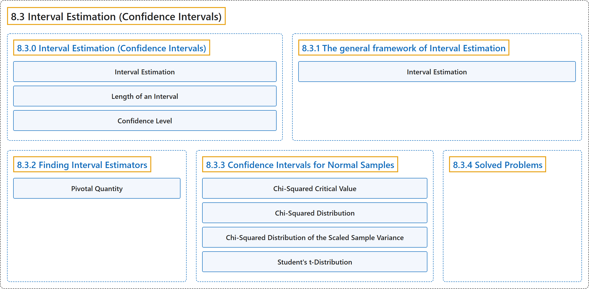

8.3 Interval Estimation (Confidence Intervals)
Classification

Glossary
| Term | Definition | 中文翻译 | Source |
|---|---|---|---|
| 8.3 Interval Estimation (Confidence Intervals) 区间估计（置信区间） |
(No definition) | （无定义） | Pishro-Nik, 2014, section 8.3 |
| 8.3.0 Interval Estimation (Confidence Intervals) 区间估计（置信区间） |
(No definition) | （无定义） | Pishro-Nik, 2014, section 8.3.0 |
| Interval Estimation 区间估计 |
"Here, we will introduce the concept of interval estimation. In this approach, instead of giving just one value \(\hat{\theta}\) as the estimate for \(\theta\), we will produce an interval that is likely to include the true value of \(\theta\)." | 这里我们引入区间估计的概念。在这种方法中，我们不只给出一个值 \(\hat{\theta}\) 作为 \(\theta\) 的估计，而是给出一个很可能包含 \(\theta\) 真值的区间。 | Pishro-Nik, 2014, section 8.3.0 |
| Length of an Interval 区间长度 |
"One is the length of the reported interval, \(\hat{\theta}_h-\hat{\theta}_l\). The length of the interval shows the precision with which we can estimate \(\theta\)." | 其一是所报告区间的长度 \(\hat{\theta}_h-\hat{\theta}_l\)。区间长度反映了我们估计 \(\theta\) 的精度。 | Pishro-Nik, 2014, section 8.3.0 |
| Confidence Level 置信水平 |
"The second important factor is the confidence level that shows how confident we are about the interval. The confidence level is the probability that the interval that we construct includes the real value of \(\theta\)." | 第二个重要因素是置信水平，它表明我们对该区间有多大把握。置信水平是我们构造的区间包含 \(\theta\) 真值的概率。 | Pishro-Nik, 2014, section 8.3.0 |
| 8.3.1 The general framework of Interval Estimation 区间估计的一般框架 |
(No definition) | （无定义） | Pishro-Nik, 2014, section 8.3.1 |
| Interval Estimation 区间估计 |
"An interval estimator with confidence level \(1-\alpha\) consists of two estimators \(\hat{\Theta}_l(X_1, X_2, \cdots, X_n)\) and \(\hat{\Theta}_h(X_1, X_2, \cdots, X_n)\) such that" | 置信水平为 \(1-\alpha\) 的区间估计量由两个估计量 \(\hat{\Theta}_l(X_1, X_2, \cdots, X_n)\) 和 \(\hat{\Theta}_h(X_1, X_2, \cdots, X_n)\) 构成，使得 | Pishro-Nik, 2014, section 8.3.1 |
| 8.3.2 Finding Interval Estimators 求区间估计量 |
(No definition) | （无定义） | Pishro-Nik, 2014, section 8.3.2 |
| Pivotal Quantity 枢轴量 |
"The random variable \(Q\) is said to be a pivot or a pivotal quantity, if it has the following properties:" | 如果随机变量 \(Q\) 具有下列性质，则称它是枢轴（pivot）或枢轴量： | Pishro-Nik, 2014, section 8.3.2 |
| 8.3.3 Confidence Intervals for Normal Samples 正态样本的置信区间 |
(No definition) | （无定义） | Pishro-Nik, 2014, section 8.3.3 |
| Chi-Squared Critical Value 卡方临界值 |
"For any \(p \in [0,1]\) and \(n \in \mathbb{N}\), we define \(\chi^2_{p,n}\) as the real value for which" | 对任意 \(p \in [0,1]\) 和 \(n \in \mathbb{N}\)，我们把 \(\chi^2_{p,n}\) 定义为满足下式的实数值 | Pishro-Nik, 2014, section 8.3.3 |
| Chi-Squared Distribution 卡方分布 |
"is said to have a chi-squared distribution with \(n\) degrees of freedom shown by" | 称为服从自由度为 \(n\) 的卡方分布，其自由度记作 | Pishro-Nik, 2014, section 8.3.3 |
| Chi-Squared Distribution of the Scaled Sample Variance 正态样本方差的卡方分布 |
"has a chi-squared distribution with \(n-1\) degrees of freedom, i.e., \(Y \sim \chi^2(n-1)\). Moreover, \(\overline{X}\) and \(S^2\) are independent random variables." | 服从自由度为 \(n-1\) 的卡方分布，即 \(Y \sim \chi^2(n-1)\)。此外，\(\overline{X}\) 与 \(S^2\) 是相互独立的随机变量。 | Pishro-Nik, 2014, section 8.3.3 |
| Student's t-Distribution 学生t分布 |
"is said to have a \(t\)-distribution with \(n\) degrees of freedom shown by" | 称为服从自由度为 \(n\) 的 \(t\) 分布，其自由度记作 | Pishro-Nik, 2014, section 8.3.3 |
| 8.3.4 Solved Problems 例题详解 |
(No definition) | （无定义） | Pishro-Nik, 2014, section 8.3.4 |
References
Pishro-Nik, H. (2014). Introduction to probability, statistics, and random processes. Kappa Research. Retrieved October 28, 2026, from https://www.probabilitycourse.com/